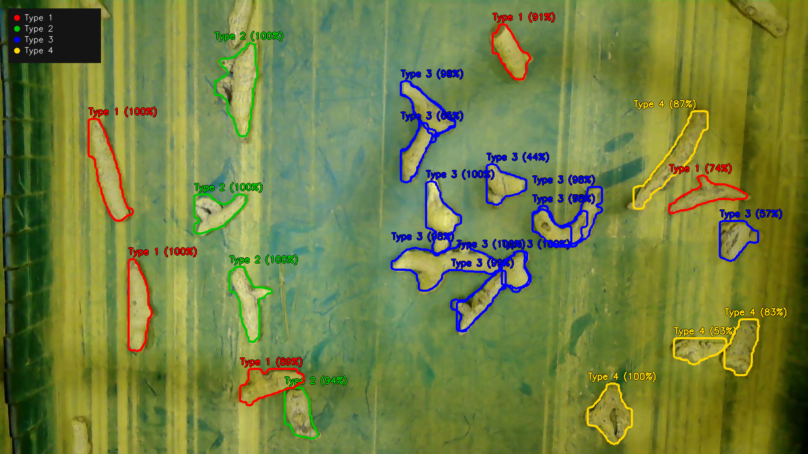

About
I am pursuing a B.Tech in Robotics and Artificial Intelligence. My research interests lie at the intersection of legged locomotion, reinforcement learning, and mechanical design — with a focus on dynamic simulation, physics-based modelling, and intelligent control systems.
Experience
Reinforcement Learning & Mechatronics Intern
Dec 2025 – 2026Xterra Robotics × IIT Kanpur (DRDO-funded Bipedal Humanoid project)
- Authored the URDF/MJCF model (12-DOF bipedal lower body), specifying inertial and collision properties for simulation stability.
- Developed a physics-based gait scaling algorithm minimising Cost of Transport across joint work, motor heating, and foot impact losses.
- Extended the ASIMOV framework for bipedal humanoid locomotion using RSL-RL and GPU-accelerated MuJoCo (mjwarp) across seven gait experiments, achieving stable velocity tracking up to 3 m/s in simulation.
Demo videos
Mechanical Design Lead
Oct 2024 – Jun 2026Robocon Team, Amrita Vishwa Vidyapeetham
- Design, modelling, and manufacture of mechanical systems for autonomous and manually operated competition robots.
- Led a multidisciplinary student team; qualified for the ABU Robocon Semifinals in both 2025 and 2026.
B.Tech in Robotics and Artificial Intelligence
2023 – PresentAmrita Vishwa Vidyapeetham, Bengaluru — CGPA 9.16
Class Representative · ACROM Club Executive · Robocon Design Lead
Projects
Bioloid Quadruped RL
Hierarchical RL framework for an 8-DOF quadruped: low-level continuous SAC experts specialise in individual motor primitives (walk, turn left, turn right); a high-level Discrete-SAC navigator selects among them every 0.5 s given the relative target waypoint. Training and evaluation across PyBullet and MuJoCo achieved stable waypoint navigation with roughly 100× the sample efficiency of a monolithic policy.
Hybrid L-BFGS – PSO Path Planning
Hybrid global/local optimisation method for joint-space path planning in redundant serial revolute manipulators. Particle Swarm Optimisation provides broad coverage to escape local minima; L-BFGS-B refines the best candidate using gradient information, combining the two approaches for efficient, high-quality solutions. Accepted, IEEE.
Automatic Turmeric Rhizome Classification & Spatial Tracking
Industrial computer vision framework developed with industry partners for automated quality grading and spatial tracking of irregular turmeric rhizomes on operational sorting conveyors. Combines high-speed instance segmentation with deep feature classification for four-class grading (Type 1, Type 2, Type 3, Type 4) and parallax-compensated kinematic tracking, streaming real-time coordinates for robotic delta pick-and-place actuation.

Five-Bar Mechanism Chess Playing Robot
A low-cost, vision-guided autonomous chess-playing robot driven by a planar five-bar parallel mechanism. Integrates an overhead computer vision pipeline for real-time board state estimation and move validation with an AI engine for move planning and inverse kinematics for physical piece actuation.
Hybrid Drone-Car Transformer
Designed and fabricated a reconfigurable multimodal robot capable of flying as a drone and driving as a ground vehicle using an active transformation mechanism.
Publications
IFToMM ISRM 2026 · Mechanisms & Machine Science, Springer · Published
An Inverted Compass Model for Passive Dynamic Brachiation
Models brachiation as the inverted counterpart of the compass-gait walker. Demonstrates stable limit cycles for passive brachiation along a slope with no actuation — purely from gravity and impact dynamics.
doi.org/10.1007/978-3-032-29469-2_38INaCOMM 2025 · Accepted
Five-bar Mechanism as Chess Playing Robot using Vision and AI
A low-cost, computer-vision-guided robotic chess-playing system using a five-bar parallel mechanism, providing a physical playing experience with AI-driven move planning.
IEEE · Accepted
Hybrid Method of PSO and L-BFGS-B for Path Planning for n-Serial Revolute Manipulator
Proposes a hybrid PSO-LBFGS method for path planning in redundant serial manipulators, combining global search with quasi-Newton local refinement.